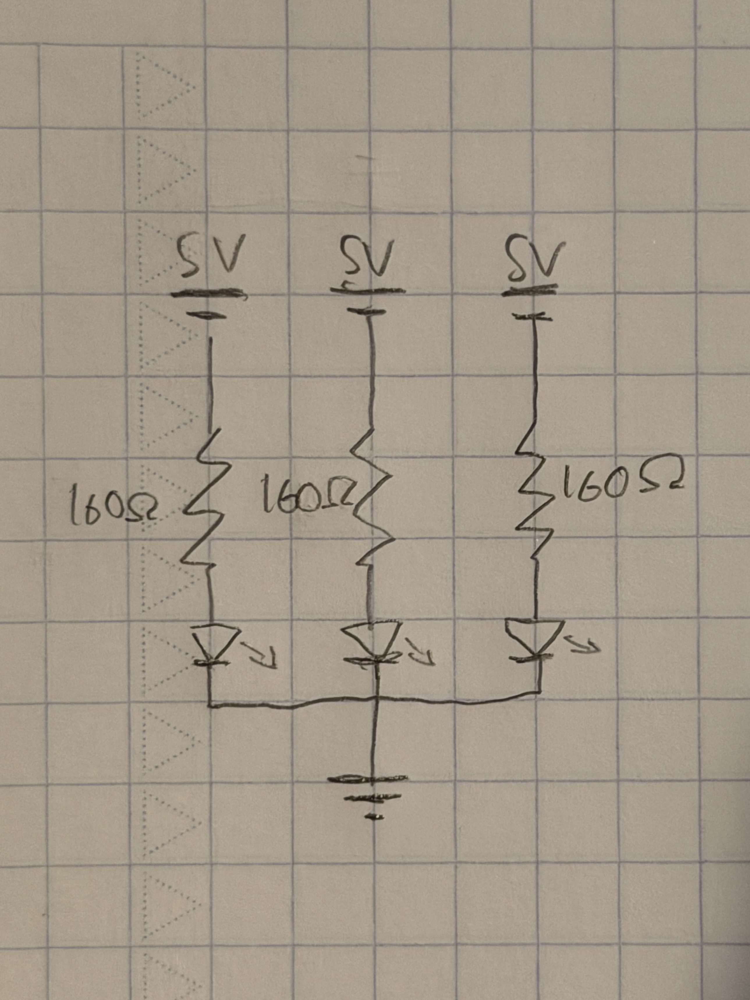

Left: The LEDs in my circuit blinking!
Left: The LEDs in my circuit blinking!
Left: The LEDs in my circuit blinking!
Left: The LEDs in my circuit blinking!
Here is all the documentation for assignment 1.
Initial calculations: The LEDs that I used for this assignment need a current of 20 mA
(milliamps) and require 1.8 V, so using Ohm's Law (V = I * R) for each individual LED:
5V - 1.8V / 20 mA = R = 160 Ω

Above: This schematic is a representation of the actual circuit, which can be seen below.
As can be seen, each pin is supplying 5V, while each circuit uses a 160 Ω resistor
based on the calculations performed above.
 Above: Here is the actual circuit, based on the schematic. I used one each of a red, yellow,
and green LED.
Above: Here is the actual circuit, based on the schematic. I used one each of a red, yellow,
and green LED.
This is the code which I used:
// Turns on and off three LEDs for 1 second each, in succession
// Partly based on code from Arduino's example Blink.ino
// Sets up the pins to be used for each color
int redPin = 2; // Red LED to pin #2
int yelPin = 3; // Yellow LED to pin #3
int grnPin = 4; // Green LED to pin #4
// Setup function to configure the correct pins (2-4) for the LEDs
void setup() { // Setup function
pinMode(redPin, OUTPUT); // Red LED pin set to output
pinMode(yelPin, OUTPUT); // Yellow LED pin set to output
pinMode(grnPin, OUTPUT); // Green LED pin set to output
}
// Continuously lights up the red, yellow, and green LEDs in turn
void loop() { // Contiuously loops
for (int j = 2; j <= redPin + 2; j++) { // Starts at the red pin and cycles
through all three
digitalWrite(j, HIGH), // Lights up LED (HIGH)
delay(1000); // LED stays illuminated for 1s
digitalWrite(j, LOW); // Turns off LED (LOW)
delay(1000); // Waits 1s for next LED to light
}
}